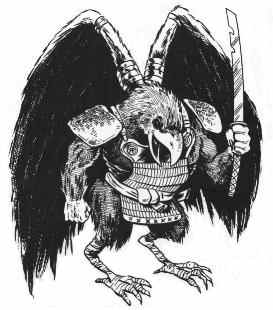

Tengu

Tengu ('''T'''iling '''eng'''ine '''U''') is a tiling engine written in J2ME for the BlackBerry platform. No implementation details here, just a very high level overview.
= Goals & Principles = * KISS philosophy * Use MVC paradigm so that view is independant of model * End up with a very general tiled game engine, whatever that means
= Model = World class keeps track of the size of the world. It contains basic information about the world, but nothing about how to render it. World class is a collection of Tiles.
Tile class is an abstract representation of a tile. This object has an array of exits to other tiles. The model is composed of these objects, linked to one another. Tile also tracks what (single) object is inside it. To keep things very simple, a tile can only have one object on it at a given time.
Tiles know nothing about how to render themselves, they only keep track of game logic.
== Map Format == For the simplest part of demoing the game, I will use a 16x9 2d map described in an ascii file.
= View = Screen class keeps track of ViewTiles.
I'm designing with two views in mind, and possibility for expansion to any number: isometric and traditional (top down, zelda-style). View is composed of a set of ViewTile (abstract class? interface?) objects. Each ViewTile is linked to an AbstractTile and is responsible for knowing how to render it.
Various kinds of views inherit ViewTile. For example, we'd have IsometricTile as well as TraditionalTile.
= Controller = Input is easy to collect. This isn't very interesting.
CategoryProject